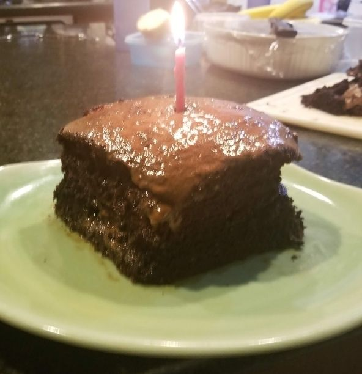

A lovely decadent chocolate cake recipe! I usually make this for family events, or really my own birthdays! A nice thing for this recipe is that it does not use that many dishes so cleaning up afterwards won't take too long!
I stumbed across this comment on a reddit thread, but it mentioned to added boiling water into the mixture, this will help the texture be moist and soft! This makes for a great cake base or even as cake pops! Unfortunately I don't have a proper recipe for chocolate frosting. You may find frostings online or use a premade one at your local grocery store.
NOTE: This makes the batter really thin. That's fine and that's what you want. In order to make a moist cake, ya add water. Shocking.